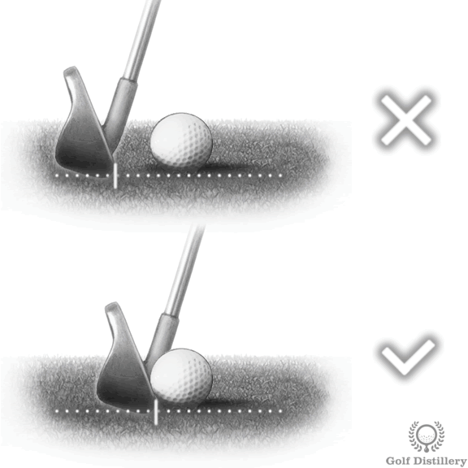

Wedges - Full Swing
Setup Tips

Keep your feet closer together than with full irons—shoulder-width maximum. This narrower base promotes better feel and control for shorter shots while maintaining balance.
For chip shots, stance can be even narrower (15-20 cm between feet) to encourage a putting-like motion with minimal lower body movement.

Standard shots: Center to slightly back of center promotes descending strike for crisp contact and proper spin.
Chip shots: Back of center in stance with hands well ahead creates low, running trajectory.
Flop shots: Forward in stance (off front heel) with open face produces maximum height and soft landing.
Pitch shots: Just back of center maintains versatility for various trajectories.

Set 60% of your weight on your front foot at address and maintain this distribution throughout the swing. This forward bias promotes the descending blow necessary for ball-first contact and proper spin generation.
For chip shots, increase to 70-80% forward to ensure clean contact with minimal ground interaction. Never shift weight backward during wedge shots—this causes fat or thin contact.

Position your hands slightly ahead of the ball at address, creating visible shaft lean toward the target. This setup pre-sets the impact position you want to achieve and delofts the club slightly for optimal trajectory control.
Maintain this forward hand position through impact—never let hands lag behind the ball. Think "hands lead the clubhead" throughout the entire motion.

Choke down: Grip 5-5 cm down from the top of the club for enhanced control on delicate shots. This effectively shortens the club and increases feel.
Grip pressure: Maintain light to moderate pressure (5-6 out of 10) to preserve feel and touch. Avoid death grip which kills distance control.
For bunker shots: Choke down and use slightly firmer grip to prevent club twisting in sand.

For pitch shots, chips, and bunker play, open your stance by pulling your front foot back from the target line. This setup provides better visibility of the target line and naturally promotes an outside-to-in path that's ideal for high, soft shots.
Align your feet and body left of target (for right-handed golfers) while keeping the clubface aimed at the target. The more you need to open the face, the more you should open your stance to compensate.
Swing Keys

Strike down and through the ball with a descending angle of attack. The club should contact the ball first, then brush the turf after impact, taking a shallow divot that starts after the ball position.
This descending motion compresses the ball against the clubface, creating maximum spin and control. Never try to "help" the ball up—trust the loft of the club to create height.

Your hands must be ahead of the clubhead at impact, just as they were at address. This forward shaft lean ensures crisp contact, proper trajectory, and maximum spin generation.
Feel like you're "trapping" or "pinching" the ball between the clubface and the ground. Avoid flipping your wrists or trying to scoop the ball—this creates inconsistent contact and poor distance control.
Even on short wedge shots, continue rotating your body through impact. Your chest should turn toward the target with your belt buckle facing left of target at finish (for right-handed golfers).
This rotation prevents getting "stuck" with hands-only manipulation. For chips, this is minimal shoulder rocking; for full wedges, it's a complete turn through the ball.
Resist the temptation to help the ball into the air by scooping or flipping at impact. The loft on your wedges (48°-60°) is designed to launch the ball high when you strike down on it properly.
Think "down means up"—the more you strike down on the ball with descending contact, the higher it will fly. Any attempt to lift the ball usually results in thin or fat contact.
The club must be accelerating through impact, regardless of shot length. Even on delicate 10-yard chips, maintain smooth acceleration—just with a shorter backswing.
Control distance through backswing length, NOT by slowing down through the ball. Deceleration causes fat shots, thin contact, and unpredictable distances. Commit to every shot with confident acceleration.

Maintain the same smooth tempo whether hitting a 30-yard pitch or a 100-yard full wedge. Vary distance through swing length (1/4, 1/2, 3/4, full), not by swinging harder or softer.
Think of your tempo as a metronome that never changes speed. This consistency is the foundation of reliable distance control and allows you to develop precise yardage gaps between clubs.
Top 5 Swing Thoughts
What it means: Strike down on the ball to compress it against the turf, pinching it between clubface and ground.
When to use: Full swing wedges and pitch shots when you need crisp contact and maximum spin. Especially helpful when struggling with thin contact or lack of backspin.
The feel: Imagine squeezing the ball at impact rather than sweeping it. You should take a divot that starts after the ball position, indicating you've compressed the ball first.
What it means: Focus your attention on swinging through impact zone with acceleration, not on making contact with the ball itself.
When to use: Essential for all wedge shots, especially when you tend to decelerate or quit on shots. Prevents "stabbing" at the ball.
The feel: Think of the ball as simply an obstacle in the path of your swing. Your goal is to swing the club past the ball position with speed, and the ball just happens to be in the way.
What it means: Maintain your head position and eye focus on the ball through impact and into follow-through. Don't peek at the result prematurely.
When to use: Critical for chip shots and short game where precise contact is essential. Use when topping or thinning wedge shots due to lifting head early.
The feel: See where the ball was resting even after it's gone. Your head should remain down until your shoulders' rotation naturally brings it up to face the target.
What it means: Maintain your spine angle and athletic posture from address through impact. Don't raise your body up or straighten your legs prematurely.
When to use: Full wedge shots and pitch shots where maintaining consistent contact point is crucial. Especially when experiencing inconsistent strike or thin contact.
The feel: Stay in your athletic position throughout the swing. Your belt buckle should maintain roughly the same height relative to the ground from address through impact. Only after impact should your body naturally rise into the finish.
What it means: Prioritize smooth, consistent rhythm over power or mechanical perfection. Same tempo whether hitting 25m or 90m.
When to use: All wedge shots, but especially crucial for distance control. When feeling rushed or tense. When struggling with inconsistent distances despite good mechanics.
The feel: Smooth and unhurried swing regardless of distance needed. Count rhythm internally ("one-two-three") or use phrase like "low and slow" for takeaway. Control distance through swing length while maintaining constant tempo.
Remember: Great wedge players distinguish themselves through tempo consistency, not swing speed. Smooth is long, smooth is accurate.
Common Fixes
Cause
Leading edge strikes ball at or above equator due to: (1) trying to help ball up by flipping wrists, (2) weight shifting backward during downswing, (3) standing up through impact, or (4) ball position too far forward.
Fix

Step 1: Set weight 60-70% forward at address and keep it there throughout swing.
Step 2: Position ball center or slightly back of center in stance.
Step 3: Hands ahead at address and maintain this lead through impact—no flipping.
Step 4: Keep head steady and maintain spine angle—don't stand up to watch shot early.
Practice drill: Place towel 5 cm behind ball. Make contact with ball without touching towel to groove descending strike.
Cause
Club contacts ground before ball due to: (1) weight hanging back on rear foot, (2) releasing club too early (casting), (3) ball position too far forward, (4) trying to scoop ball up, or (5) collapsing through impact.
Fix
Step 1: Start with 70% weight on front foot and maintain forward pressure throughout swing.
Step 2: Move ball back to center of stance for better contact point control.
Step 3: Feel hands leading clubhead through entire downswing and impact zone.
Step 4: Focus on hitting the ball first, then brush turf after—divot starts after ball position.
Practice drill: Draw line in grass at ball position. Focus on contacting ball before line, with divot starting after line.
Cause
Variable distances with same club due to: (1) inconsistent tempo—swinging faster or slower, (2) varying contact quality (fat/thin), (3) changing swing length without awareness, or (4) deceleration through impact on some swings.
Fix

Step 1: Establish consistent tempo—count "1-2" for backswing, "3" for downswing on every shot.
Step 2: Practice specific swing lengths: 1/4 (hands to hip), 1/2 (hands to chest), 3/4 (hands to shoulder), full (complete turn).
Step 3: Always accelerate through ball—control distance with backswing length, not by slowing down.
Step 4: Track your yardages: Record distance for each wedge at each swing length (1/4, 1/2, 3/4, full).
Practice drill: Hit 10 balls with 1/2 swing focusing only on tempo consistency. Note average distance. Repeat with 3/4 swing.
Cause
Ball flies too high or too low due to: (1) incorrect ball position affecting launch, (2) improper shaft lean at impact, (3) flipping wrists adding dynamic loft, (4) scooping motion rather than descending strike, or (5) using wrong club for desired trajectory.
Fix

For lower trajectory:
- Ball position back in stance (just back of center)
- Hands well ahead at address and impact
- Weight more forward (70/30 split)
- Choose less-lofted wedge (PW or GW instead of SW/LW)
For higher trajectory:
- Ball position slightly forward of center
- Hands just slightly ahead (less shaft lean)
- Weight more centered (55/45 split)
- Choose high-lofted club (LW 60° for maximum height)
Key principle: Never manipulate loft through wrist flip. Control trajectory through setup position and club selection while maintaining proper ball-first contact.
Distance Control

Control distance through swing length while maintaining consistent tempo and acceleration:
- Full swing (100%): Complete backswing, full shoulder turn, maximum distance for each wedge
- 3/4 swing (75%): Three-quarter backswing (hands to shoulder height), full follow-through
- 1/2 swing (50%): Half backswing (hands to chest height), matching follow-through
- 1/4 swing (25%): Short backswing (hands to hip height) for delicate shots
Critical: Maintain same tempo and acceleration at all swing lengths. Never decelerate to shorten distance—use shorter backswing instead.

PW (Pitching Wedge) - 44-48°:
- Longest distance wedge in bag (typically 90-120m)
- Lower trajectory with more roll after landing
- Most versatile for full shots and longer approaches
GW (Gap Wedge) - 50-52°:
- Fills distance gap between PW and SW (typically 70-100m)
- Medium trajectory and roll
- Excellent for controlled full swings
SW (Sand Wedge) - 54-56°:
- Designed for bunker play with added bounce (typically 50-80m full)
- High trajectory with moderate roll
- Standard for greenside bunker shots
LW (Lob Wedge) - 58-60°:
- Highest loft, shortest distance (typically 50-70m full)
- Maximum height with minimal roll
- Best for delicate shots, flops, and tight pins
- Bounce selection: Depends on your swing type - higher bounce (10-14°) works well for diggers and softer turf; lower bounce (4-8°) suits sweepers and firmer conditions. Get fitted based on your attack angle.

For HIGHER trajectory:
- Ball position slightly forward of center
- Open clubface slightly at address
- Weight more centered (55/45 front foot bias)
- Shallower angle of attack
- Choose higher-lofted club (SW or LW)
For LOWER trajectory:
- Ball position back in stance (just back of center)
- Hands well ahead at address
- Weight forward (70/30 split)
- Steeper angle of attack
- Choose lower-lofted wedge (PW or GW)
When to adjust: Into wind (lower), soft greens (higher), firm greens (lower for release), over obstacles (higher), under trees (lower).

Create a personal distance matrix for each wedge at each swing length. This eliminates guesswork and builds confidence:
Sample Distance Matrix:
| Club | Full | 3/4 | 1/2 |
|---|---|---|---|
| PW | 120y | 100y | 80y |
| GW | 105y | 85y | 65y |
| SW | 85y | 70y | 50y |
| LW | 70y | 55y | 40y |
How to build your chart: At practice range, hit 10 balls with each club at each swing length. Eliminate highest and lowest, average the middle 8. Update seasonally as conditions change.